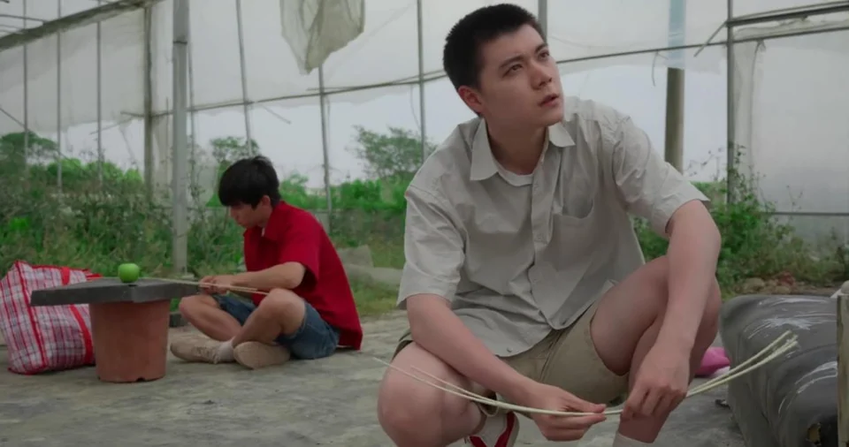
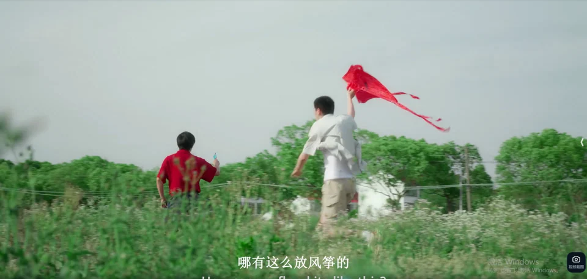
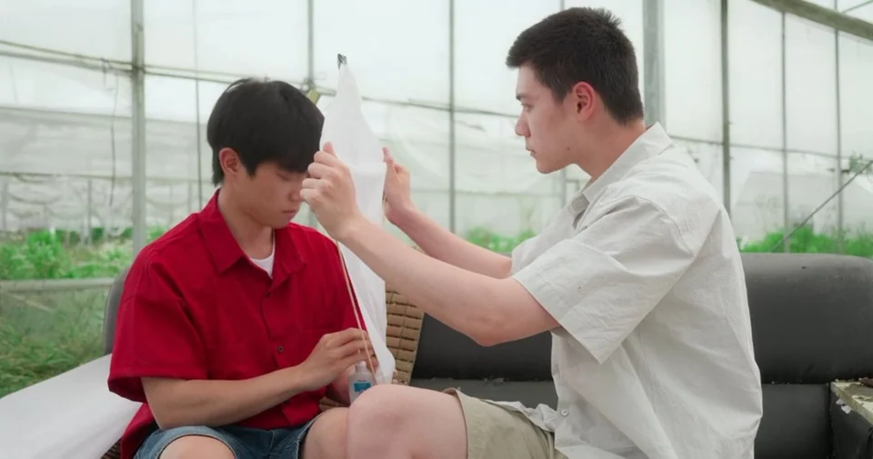
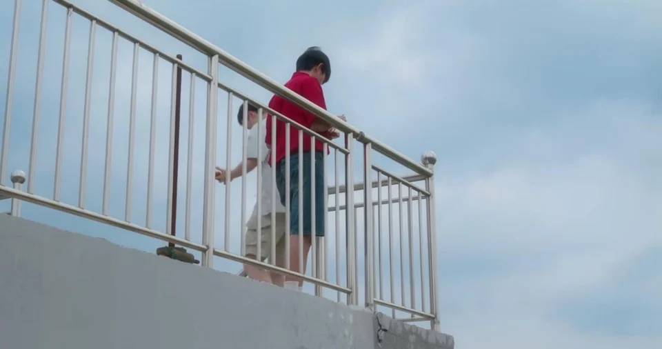
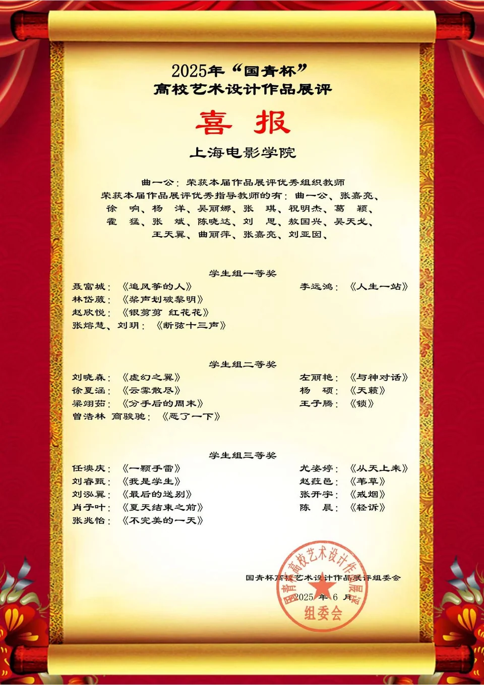

《追风筝的人》
关键词：情感、剧情
成片静帧




故事梗概
林落平即将于第二天清晨离开小镇。陈沉在送别前夕，请求他“再陪我做一次风筝”——这是两人少年时未能完成的约定。
两人在小道上相遇，林落平抛给陈沉一颗青苹果。陈沉提出做风筝的请求，林落平没有拒绝。在废弃仓房里，他们沉默地制作风筝骨架。林落平被木条割伤手，自己抢过创口贴贴上，拒绝了陈沉的帮助。透过薄薄的风筝纸，陈沉隐约触碰到了林落平的轮廓，却始终隔着一层纸。
桥边吃炒面时，陈沉记着林落平的喜好（多辣、无葱），林落平却故意说出相反的搭配。两人短暂地笑了，回忆起当年淋雨发烧的往事。陈沉试图靠近，林落平突然站起，烦躁地催促去放风筝。
荒野上，风太小，风筝屡次落空。林落平不耐烦地想要放弃，陈沉却执着地蹲在地上解缠绕的线。陈沉质问：“你总是这样，不肯再试一下就要放弃。” 他提起当年——下雨时林落平拉着他跑回去，结果刚到仓房雨就停了。“我们明明可以再等一会。”林落平反驳：“我又不是天气预报……成事在天，我们说了不算。” 他转身离开。陈沉独自一次次奔跑、摔倒，最终情绪爆发，将林落平扑倒在草地上，两人扭打在一起。陈沉慢慢放手，不再看他。两人沉默良久。陈沉站起来，再次举起风筝。麦地里，风筝终于迎风飞起。陈沉请求一个拥抱，大风盖过声音，林落平没有听见。忽然，风筝线断了。林落平下意识去追，回头却发现陈沉站在原地，一动不动。
林落平： “不追风筝吗？”
陈沉： “顺其自然吧。”
两人继续并肩向前走去。身后，断线的风筝被风吹回到他们出发的那棵树下。背影在远景中渐渐远去——原点还在，人已离开。
2.获奖证书

4.完整剧本
《追风筝的人》（编剧二作）
1日 外 河边
陈沉和林落平在河边扔石子，他们分别在河的两侧，陈沉在左，林落平在右。
陈沉在原地蹲着，只是从旁边捡石头然后扔，他每次都只能扔到河中间，林落平则在右侧慢慢地向纵深方向走去，边走边找石头扔，而他每次都会比陈沉扔得更远，似乎投中了陈沉的倒影，溅起水花弄湿了林落平的裤腿。
2 日 外 小道
陈沉和林落平在小道上走着，林落平忽然向前冲，跑到一棵树下，抱着就往上爬，想要够到某个东西。陈沉见状，也加快脚步跟了上来。
林落平没有说话，只是径直跳了下来，然后伸出手，示意陈沉把手伸出来。陈沉伸出了手，林落平手里攥着的东西放了上去，是一颗青苹果（暂定）。林落平放上苹果就自顾自往前走。
陈沉突然站定，看着林落平的眼睛一字一句说。
陈沉：林落平，可以再陪我做一次风筝吗？
3a 日 内 仓房
陈沉和林落平在废弃的仓房里做风筝，俩人虽然共处一室，在仓房的撑杆却像把俩人隔绝开。每当林落平移动时，他口袋里的青苹果与钥匙串碰撞发出细响。陈沉的喉结随每次"叮当"声抽动。
陈沉率先打破沉默。
陈沉：什么时候走？
林落平：明天早上八点的车。
林落平口袋的苹果突然滚落地面，陈沉盯着苹果，嘴里吐出几个字。
陈沉：那你还回……（来吗）
林落平没有回应，只是“啊”了一声，陈沉马上凑了上去，原来是林落平据木条据到了手。陈沉马上从口袋里掏出创口贴，想帮林落平贴上。没等陈沉拆完包装，林落平就自己把创口贴拿了过去，自己贴上。
陈沉只是盯着林落平，没有说话。
陈沉：下午能飞起来吗？
林落平：不知道，得看天。
3b 日 内 仓房
陈沉和林落平做好了风筝骨架，俩人面对面坐着，林落平举着风筝纸，陈沉在另一面糊胶。
陈沉低头盯着手中胶水瓶，拇指无意识地反复摩挲瓶口凝固的胶渍，直到胶水被挤出瓶口滴落，他才惊觉停手。
透过轻薄的风筝纸，陈沉看到了林落平脸的轮廓，他的手不经意间放了上去，然后缓缓移到边缘林落平拿纸的手，好像触碰到了他，但始终隔着那层纸。
林落平：糊好了？
陈沉看了一圈仓房，深深叹口气。
林落平：纸糊好了没。
陈沉这才收回了手。
陈沉：好-好了。
林落平：放心吧，这仓房不会拆。
陈沉拎来颜料桶，直接把蓝色的油漆刷上去一笔，林落平抓住陈沉的手，阻止林落平的动作。
林落平：你干嘛？
陈沉：上色啊——
林落平：你不是喜欢红色吗？
风筝最后是红色的中间有一抹蓝色。
4 日 外 小桥上
陈沉和林落平蹲坐在护栏边，后景是河。陈沉从塑料袋里拿出两盒炒面，打开其中一盒闻了闻。
陈沉：没有葱，多放辣，是你的。
陈沉说着，把炒面递给了林落平，然后打开了自己那盒炒面。
陈沉：这是我的。
林落平：葱香菜加满，少油不要辣。
陈沉愣住，林落平没有抬头，低着头偷笑。说罢只是自顾自嗦了一口面，陈沉没有说话，也吃起了自己的面。吃了两口，林落平大口的嗦着面条，陈沉看着林落平吞咽，林落平注意到他的视线。
林落平：看我干嘛？
陈沉被撞破尴尬，抬头看天。
陈沉：感觉好像，天要下雨了。
林落平：希望这次咋们俩不会浇成落汤鸡。
陈沉：你说——仓房那次。
林落平笑着点点头。
陈沉：希望这次不会烧到三十八度。
两个人相视一笑。
林落平：你够不够吃啊？
陈沉：太辣了，你的。
林落平：诶呀——来来来！
林落平凑到陈沉旁边夹了两筷子。
陈沉看着林落平夹过来的面咽了一口口水，夹起一口送入嘴中。
陈沉瞄着林落平，林落平大口吃面，发出咕噜的声音，陈沉盯着林落平的嘴出神。
陈沉不自觉地将背贴向林落平。直到陈沉完全贴上，林落平“噌”地一下站起来，陈沉扑了个空。
林落平：走吧（烦躁的挠头）放风筝去吧。
陈沉点点头。
5a 日 外 荒野
林落平和陈沉来到空地放风筝。林落平在在后端拿着风筝，陈沉扯着线，林洛平向前奔跑，陈沉在后面追，但是风筝并未如想象中飞起，而是重重砸落。
林洛平：今天风太小了，放不起来啊（不耐烦）。
陈沉：再试试吧。
陈沉再次尝试，结果因为跑的太快后面的林落平没跟上，风筝不但没飞起来，线还缠在一块。
林洛平：（不耐烦）都说了不行，而且你自己掂掂你扎的有多沉（把风筝线扔在地上）
陈沉捡起来，林洛平转身就要回去。
林洛平：走啊，回去吧，早知道这样就不该出来折腾。
陈沉不说话，默默地蹲在地上解开纠缠在一起的风筝线。
林洛平：诶，听见了吗（有一点生气）
林洛平看陈沉没有反应走回去，居高临下的看着陈沉。陈沉也仰着头看着他。
陈沉：你总是这样，不肯再试一下就要放弃。
林洛平皱皱眉，不懂陈沉在说什么。
陈沉低着头看手里的风筝，笨拙的解着线团却越来越乱。林洛平用脚踢了陈沉一下。
林洛平：你发什么神经。
陈沉：上次我们也是一起扎了个风筝，特意跑到北边的菜花田里放，结果突然下大雨，我们站在房檐底下，我说再等一会，你说雨不会停风筝放不成了，拉着我跑回去，淋了一路的雨，结果刚到仓房，雨就停了。我们明明可以再等一小会，就可以放成的。
林洛平：我又不是天气预报，我怎么知道雨什么时候停，天什么时候放晴啊。
陈沉：可我们明明可以再等一会，再多等一会！
林洛平：（摇摇头）你懂不懂什么叫成事在天——天说了算，我们说了不算啊！
陈沉：是吗？
风筝的死结被陈沉解开，风筝短短的一截陈沉的手里随风飘扬。
风吹动着两人之间的草叶，林落平转身离开，陈沉看着林洛平离开，拿着风筝也转身离开。
5b 昏 外 荒野
林落平在远处看见陈沉一次又一次奔跑，但是风筝始终没有放起来。
林落平：（口型）蠢货——
在一次奔跑后，陈沉摔倒在地，林落平本以为他在装摔，结果发现好一会陈沉都没有起来，他迅速起身跑过去看，结果发现陈沉一脸忿忿地看着他，他掉头离开。陈沉却忽地站起身，猛地将他扑倒在草地上。
两人扭打在一起，动作不大，却像是压抑许久的爆发。
林落平：你干嘛？
陈沉：我疯了我疯了，我早就要疯了！
林落平推他，陈沉死死扣着他肩膀。
林落平：就因为一个破风筝！
陈沉：是！你凭什么一声不吭的就这么认了？说“不放了”转身就走，说放下就能放下？
我呢？我呢！
陈沉情绪激动的掐住林洛平的脖子，林洛平反扑倒陈沉，两个人在草地上翻滚，泥土和红色染料擦在了身上。
林落平：（给他一拳）不是所有事我们现在立刻马上就说明白的！
陈沉；为什么？
林洛平：因为我不知道！我不知道——
陈沉盯着他许久。
陈沉：我冲了这么久，你一次都不跟着跑，你告诉我，我该怎么办？
林落平这才看向他，眼中情绪翻涌。
林落平：顺其自然，好吗？
两人停住动作，草叶贴在他们衣角和发丝上，风从他们之间吹过。
陈沉慢慢放开了手，坐起身，不再看他。林落平躺着没动，过了一会儿，才慢慢坐起。谁都没有说话，风筝线还缠在陈沉手上，风筝躺在不远处，尾巴还在随风轻轻晃动。
微风吹过，陈沉站了起来，再次准备放风筝，林落平见状。
林落平：犟种。（咬牙切齿）
随即林落平叹了口气，也跟着起身。
6 昏 外 麦地
俩人走到麦地，陈沉扯着线，林落平在后面托举着风筝，随着陈沉的奔跑，风筝竟真的迎风而起，林落平也跟着跑到线轴处，帮着陈沉拉扯风筝线，直到风筝飞上天，俩人才停了下来。
陈沉抬头看了看天上的风筝，又看向了林落平，此时一阵大风吹过。
陈沉：你可以给我一个拥抱吗？
大风似乎盖过了陈沉的声音，林落平疑惑地看着陈沉。
林落平：你说什么？
忽地，风筝线断了，好不容易放起来的风筝飞向了更远的天空。林落平扔下线轴去追，回头却发现陈沉怔怔地留在原地，没有动弹，只是呆呆地望着远去地风筝。
林落平：不追风筝吗？
陈沉：顺其自然吧。
两个人继续在路上走，向着前方一直走下去（对应第二场），两个人走后，才发现他们找的风筝吹回到了二人出发的地方，风筝落在树下，二人的背影在远景渐渐远去。（未来即使原点）